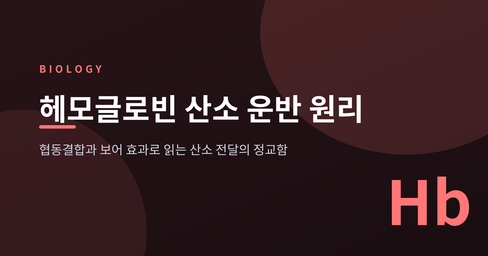
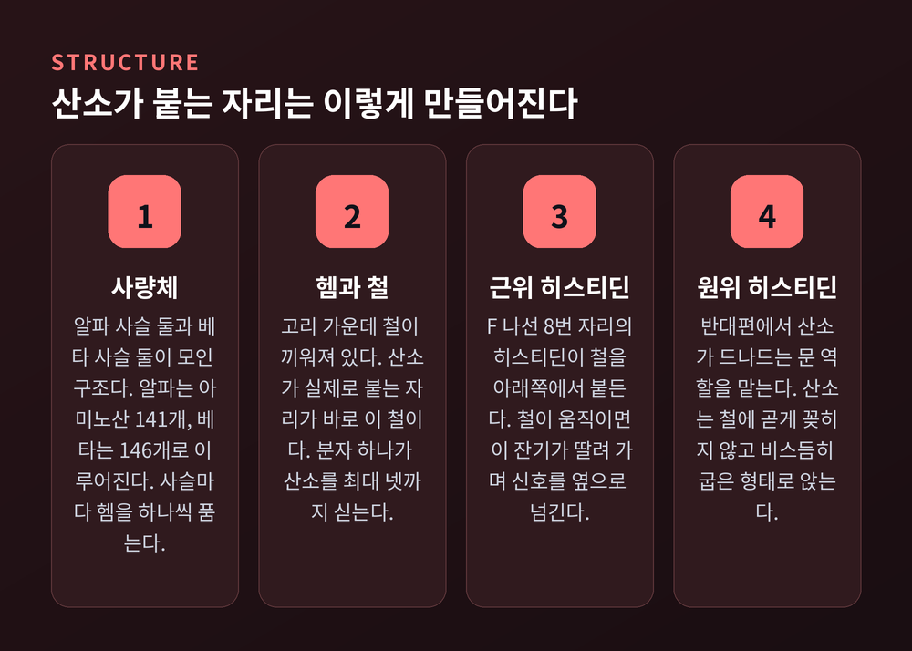
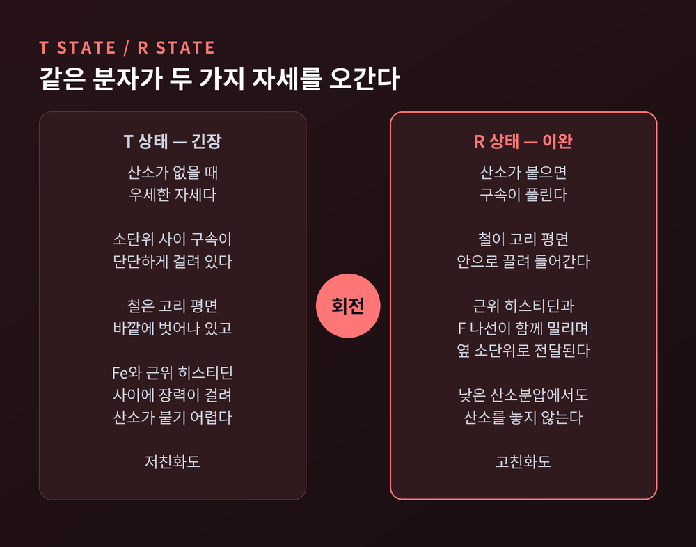
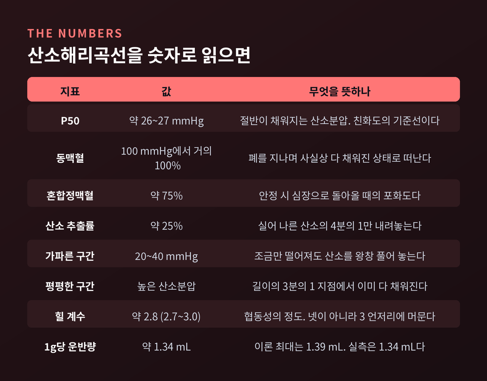
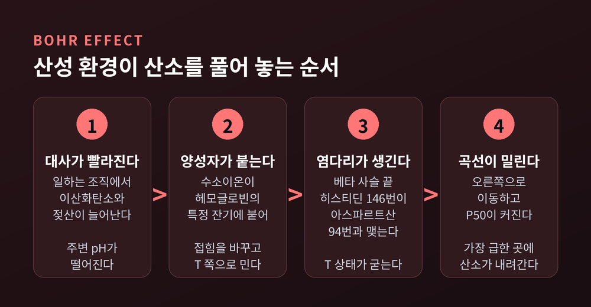
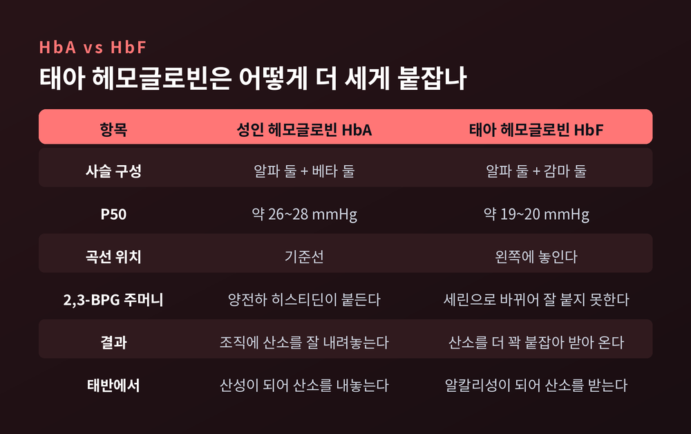
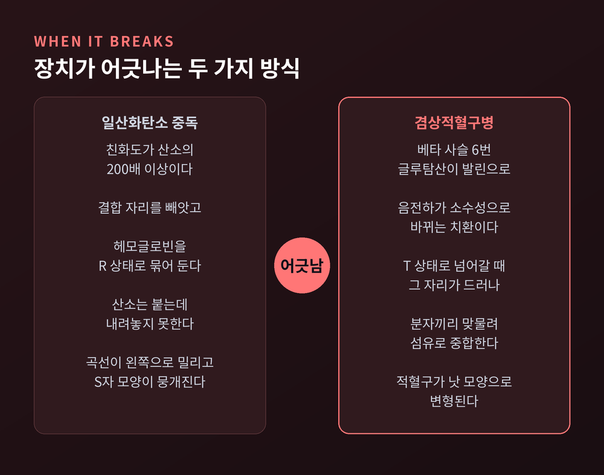

이번 글에서는 헤모글로빈이 산소를 싣고 내리는 방식을 분자 수준에서 정리해 보겠습니다. 폐에서 어떻게 공기와 피가 만나는지가 아니라, 단백질 한 덩어리가 어떤 장치로 "받을 곳에서 받고 줄 곳에서 주는지"에 초점을 맞추려 합니다.
세 줄 요약
성인 헤모글로빈은 알파 사슬 두 개와 베타 사슬 두 개가 모인 사량체입니다. 알파 사슬은 아미노산 141개, 베타 사슬은 146개로 이루어집니다.
각 사슬은 헴을 하나씩 품습니다. 헴은 철을 가운데 끼운 고리 구조이고, 산소가 실제로 붙는 자리는 이 철입니다.
철에는 결합 자리가 여섯 개 있습니다. 네 자리는 고리의 질소가, 한 자리는 F 나선 8번의 히스티딘이 차지합니다. 이 잔기를 근위 히스티딘이라 부릅니다. 남은 한 자리가 산소 몫입니다.
산소는 철에 곧게 꽂히지 않습니다. 한쪽 산소 원자만 철에 붙고 나머지 하나는 비스듬히 뻗는 굽은 형태로 앉습니다. 반대편의 원위 히스티딘은 산소가 드나드는 문 역할을 맡습니다.
숫자로 보면 규모가 실감 납니다. 적혈구 하나에 헤모글로빈 분자가 약 2억 5천만에서 2억 8천만 개 들어 있고, 분자마다 산소를 넷씩 실으니 적혈구 한 개가 산소 분자 10억 개가량을 나르는 셈입니다.
헤모글로빈 1g이 싣는 산소는 약 1.34mL입니다. 이론상 최대치는 1.39mL이고, 실측값이 1.34mL로 잡힙니다. 혈액에 그냥 녹아 있는 산소는 1L당 3mL에 불과한 반면 헤모글로빈이 붙들고 있는 산소는 약 197mL입니다. 혈중 산소의 98%를 이 단백질 하나가 감당합니다.

산소분압을 가로축에, 포화도를 세로축에 놓고 그래프를 그리면 직선도 쌍곡선도 아닌 S자가 나옵니다. 이 모양 하나에 헤모글로빈의 설계 의도가 압축되어 있습니다.
원인은 협동결합입니다. 헴 하나가 산소를 붙잡으면, 나머지 세 개의 산소 친화도가 함께 올라갑니다. 첫 번째 산소는 붙기 어렵고, 두 번째부터는 점점 쉬워집니다.
협동성의 정도는 힐 계수로 나타냅니다. 천연 헤모글로빈의 힐 계수는 약 2.8이고, 보고된 범위는 2.7에서 3.0 사이입니다. 결합 자리가 넷이니 완전한 협동이라면 4가 나와야 하지만 실제로는 3 언저리에 머뭅니다. 완벽한 기계는 아닌 셈입니다.
비교 대상을 하나 두면 이해가 빨라집니다. 근육 속 미오글로빈은 소단위가 하나뿐이라 협동성이 없습니다. 곡선이 S자가 아니라 쌍곡선이고, 낮은 산소분압에서도 산소를 놓지 않습니다. 그래서 미오글로빈은 산소를 근육 안쪽으로 끌어당기는 역할에 어울립니다.
협동결합은 마법이 아닙니다. 구조가 실제로 움직여서 생기는 일입니다.
헤모글로빈은 두 가지 4차 구조 사이를 오갑니다. 산소가 없을 때 우세한 쪽이 T 상태입니다. 소단위 사이의 구속이 단단해서 산소를 붙잡으려면 더 높은 산소분압이 필요합니다. 산소가 붙으면 그 구속이 풀리며 R 상태가 됩니다. 이쪽은 낮은 산소분압에서도 산소를 놓지 않습니다.
전환의 핵심을 짚은 사람이 막스 페루츠입니다. 헤모글로빈은 X선 결정학으로 연구된 최초의 단백질 가운데 하나였고, 페루츠는 그 공로로 1962년 노벨 화학상을 받았습니다.
그가 제시한 그림은 이렇습니다. 산소가 없을 때 철은 5배위 고스핀 상태로 포르피린 평면 바깥에 살짝 벗어나 있습니다. 산소가 붙으면 철이 6배위 저스핀이 되면서 평면 안으로 끌려 들어갑니다.
여기서부터가 중요합니다. 철이 움직이면 그 철을 붙들고 있던 근위 히스티딘이 딸려 가고, 히스티딘이 속한 F 나선 전체가 밀립니다. 이 밀림이 소단위 접촉면을 타고 옆으로 전달됩니다.
T 상태에서 산소 친화도가 낮은 것도 같은 이유입니다. 철과 근위 히스티딘 사이의 결합에 장력이 걸려 있어, 철이 평면으로 들어가는 움직임 자체가 억제됩니다.
4차 구조 수준에서는 한쪽 αβ 이량체가 다른 쪽에 대해 12도에서 15도가량 회전하고, 0.8Å 정도의 작은 병진 이동이 함께 일어납니다. 눈에 보이지 않는 각도 차이가 산소를 쥐고 놓는 능력을 갈라놓습니다.

원리만으로는 감이 잘 잡히지 않습니다. 실제 수치를 놓고 보겠습니다.
친화도의 대표 지표는 P50입니다. 헤모글로빈이 절반만 산소로 채워지는 산소분압을 말합니다. 정상 성인은 약 26에서 27mmHg 사이입니다. 자료에 따라 26.6을 쓰기도 하고 27을 쓰기도 합니다.
동맥혈에서는 산소분압 약 100mmHg에서 포화도가 거의 100%에 이릅니다. 안정 시 심장으로 돌아오는 혼합정맥혈의 포화도는 약 75%입니다.
이 차이가 뜻하는 바가 흥미롭습니다. 동맥혈 산소함량은 약 20g/dL, 정맥혈은 약 15g/dL입니다. 안정 상태에서 실어 나른 산소의 약 25%만 조직에 내려놓고 나머지는 그대로 돌아온다는 뜻입니다. 나머지 75%는 급할 때 쓰라고 남겨 둔 예비분인 셈입니다.
곡선의 두 구간은 성격이 정반대입니다. 높은 산소분압 쪽은 평평합니다. 흡입 산소가 어느 정도 줄어도 포화도는 잘 떨어지지 않습니다. 실제로 폐 모세혈관을 지나는 동안 헤모글로빈은 혈관 길이의 3분의 1 지점에서 이미 거의 다 채워집니다. 운동으로 혈류가 빨라져도 시간 여유가 남습니다.
반대로 20에서 40mmHg 구간은 가파릅니다. 산소분압이 조금만 떨어져도 포화도가 크게 내려갑니다. 조직 쪽에서 산소를 왕창 내려놓기 좋은 조건입니다.

곡선의 위치는 고정되어 있지 않습니다. 주변 환경에 따라 좌우로 밀립니다.
이산화탄소 분압이 올라가거나 pH가 떨어지면 산소 친화도가 낮아집니다. 곡선이 오른쪽으로 이동하고 P50이 커집니다. 결과적으로 산소가 더 많이 풀립니다. 크리스티안 보어의 이름을 딴 보어 효과입니다.
분자 수준에서는 염다리가 주인공입니다. 산성 환경에서 베타 사슬 끝의 히스티딘 146번이 양전하를 띠고, 같은 사슬의 아스파르트산 94번과 염다리를 맺습니다. 이 결합이 T 상태를 붙잡아 둡니다. 산소가 붙은 R 상태에서는 이런 결합이 만들어지지 않습니다.
기여하는 잔기는 이것만이 아닙니다. 알파 사슬 C말단의 아르기닌 141번을 비롯해 여러 히스티딘이 함께 작용하고, 염소이온도 양전하를 중화하며 힘을 보탭니다.
이산화탄소는 두 갈래로 개입합니다. 하나는 방금 말한 대로 pH를 통한 간접 경로입니다. 다른 하나는 직접 경로로, 이산화탄소가 사슬 끝의 아미노기에 붙어 음전하 카바메이트를 만들고 이것이 알파 사슬 아르기닌 141번과 염다리를 이룹니다.
가장 좋은 예가 운동 중인 근육입니다. 대사가 빨라지면 이산화탄소와 젖산이 늘어 주변 pH가 떨어지고, 발열로 온도도 오릅니다. 이 요인들이 합쳐져 곡선을 오른쪽으로 크게 밉니다. 가장 산소가 필요한 자리에 가장 많은 산소가 내려갑니다.
다만 이 장치가 늘 이롭게만 작동하지는 않습니다. 만성 과호흡이 이어지면 이산화탄소가 과하게 빠져나가 곡선이 오히려 왼쪽으로 밀립니다. 그러면 말초로 가는 산소 방출이 나빠질 수 있습니다. 정상 분당 환기량이 약 6L인데 이런 상태에서는 15L까지 올라가기도 합니다.

헤모글로빈의 친화도를 조절하는 장치가 하나 더 있습니다. 적혈구 안에서 해당과정 곁가지로 만들어지는 2,3-BPG입니다.
이 작은 음전하 분자는 탈산소 상태의 헤모글로빈 한가운데, 두 베타 사슬 사이의 틈새에 끼어듭니다. 틈새에 늘어선 히스티딘 2번, 라이신 82번, 히스티딘 143번 같은 양전하 잔기들이 이 분자를 붙듭니다.
구조가 답을 줍니다. T 상태에서는 그 틈새가 충분히 벌어져 있고, R 상태에서는 베타 사슬끼리 수소결합이 촘촘해져 자리가 좁아집니다. 즉 2,3-BPG는 T 상태에만 붙어서 T 상태를 굳힙니다. 친화도가 내려갑니다.
고지대에 올라가면 이 손잡이가 돌아갑니다. 해당과정이 활발해지며 2,3-BPG가 쌓이고 곡선이 오른쪽으로 밀립니다. 다만 즉시 일어나는 일은 아닙니다. 며칠에 걸쳐 진행됩니다. 자료에 따라 이삼 일이라고도 하고 나흘까지 걸린다고도 보고합니다.
반대 방향의 사례도 있습니다. 보관 중인 적혈구에서는 2,3-BPG가 시간이 지나며 줄어듭니다. 보고된 자료에서는 3주차 이후 감소가 뚜렷합니다. 이 경우 곡선이 왼쪽으로 밀려, 수혈된 적혈구가 산소를 제대로 내려놓지 못하는 상황이 생길 수 있습니다.
태아는 곤란한 처지에 놓여 있습니다. 산소를 공기가 아니라 어머니의 피에서 얻어야 합니다. 주는 쪽보다 받는 쪽이 더 세게 붙잡아야 거래가 성립합니다.
태아 헤모글로빈은 베타 사슬 대신 감마 사슬이 들어간 구조입니다. P50은 약 19에서 20mmHg로, 성인의 26에서 28mmHg보다 낮습니다. P50이 낮다는 것은 산소를 더 꽉 붙잡는다는 뜻입니다.
이유가 앞에서 본 손잡이에 있습니다. 성인 헤모글로빈에서 2,3-BPG 주머니를 이루던 양전하 히스티딘이, 감마 사슬에서는 세린으로 바뀌어 있습니다. 양전하가 사라지니 2,3-BPG가 잘 붙지 못합니다. T 상태를 굳히는 힘이 약해지고, 친화도는 높게 유지됩니다.
태반에서는 한 가지 장치가 더 작동합니다. 태아 혈액의 이산화탄소가 어머니 쪽으로 넘어가면, 태아 혈액은 상대적으로 알칼리성이 되어 곡선이 왼쪽으로 밀리고 산소를 더 받아들입니다. 같은 순간 어머니 혈액은 산성이 되어 곡선이 오른쪽으로 밀리고 산소를 더 내놓습니다. 한 번의 이산화탄소 이동이 양쪽에서 동시에 보어 효과를 일으키는 셈입니다. 이를 이중 보어 효과라 부릅니다.

정교한 장치일수록 어긋났을 때의 결과가 분명합니다. 두 가지 사례를 보겠습니다.
일산화탄소는 헤모글로빈에 대한 친화도가 산소보다 압도적으로 높습니다. 200배 이상이고, 자료에 따라 200배에서 250배까지 제시됩니다.
피해는 두 겹입니다. 첫째, 결합 자리를 차지해 산소가 탈 공간을 줄입니다. 둘째, 이쪽이 더 고약한데, 헤모글로빈을 R 상태로 묶어 둡니다. 남은 자리에 산소는 잘 붙지만, T 상태로 돌아가 산소를 내려놓는 일이 되지 않습니다. 곡선은 크게 왼쪽으로 밀리고 S자 모양 자체가 뭉개집니다. 산소분압이 정상으로 나오는데도 조직은 산소가 모자란 상태에 빠집니다.
겸상적혈구병은 아미노산 한 개에서 시작합니다. 베타 사슬 6번 자리의 글루탐산이 발린으로 바뀝니다. 음전하 잔기가 소수성 잔기로 교체되는 변화입니다.
흥미로운 점은 이 병이 T 상태에 의존한다는 사실입니다. 산소가 붙어 있는 동안에는 큰일이 없습니다. R 상태에서 T 상태로 넘어가는 미세한 구조 변화가 그 소수성 발린을 바깥으로 드러내고, 드러난 자리가 다른 분자의 소수성 주머니와 맞물리며 분자들이 줄줄이 붙어 섬유를 이룹니다. 적혈구가 낫 모양으로 변형되고 혈관을 지나기 어려워집니다.

이 구조를 겨냥한 약도 있었습니다. 복셀로토르는 헤모글로빈의 평형을 R 상태 쪽으로 미는 알로스테릭 조절 약물로 2019년 승인을 받았습니다. 구조 연구에서 이 약은 베타 틈새의 2,3-BPG 자리와 겹치는 위치에 붙는 것으로 확인되었습니다.
그러나 2024년 9월, 제조사가 전 세계 시장에서 전 물량을 자진 회수했습니다. 혈관폐쇄성 위기와 사망 사례의 불균형이 확인되어 이익이 위험을 넘지 못한다고 판단한 결과입니다. 분자 수준에서 말이 되는 설계가 사람에게서도 통한다는 보장은 없다는 사실을, 이 사례가 조용히 일러 줍니다.
한 가지 분명히 해 둘 것이 있습니다. 이 글은 원리를 정리한 글이지 진단이나 치료를 위한 안내가 아닙니다. 일산화탄소 노출이 의심되거나 빈혈, 호흡곤란, 혈액질환과 관련된 증상이 있다면 지체 없이 전문 의료기관을 찾아 상담하시길 권합니다.
정리하면 이렇습니다. 헤모글로빈은 산소를 많이 싣기 위해 만들어진 통이 아니라, 받을 곳과 줄 곳을 구분하기 위해 만들어진 스위치에 가깝습니다. 헴 4개가 서로 눈치를 보며 자세를 바꾸고, pH와 이산화탄소와 2,3-BPG가 그 자세의 기준선을 조금씩 옮깁니다.
예전에는 이 곡선을 그저 외워야 할 그래프로 여겼습니다. 지금은 조금 다르게 읽힙니다. 저 S자는 "얼마나 담을 수 있는가"가 아니라 "어디서 놓을 것인가"에 관한 답입니다.
철 원자 하나가 고리 평면 안으로 미세하게 끌려 들어가는 움직임에서 시작해, 숨 한 번이 조직 구석까지 닿습니다. 그 정교함을 어떻게 보느냐고 물으신다면, 저는 설계보다 균형에 가깝다고 답하겠습니다.